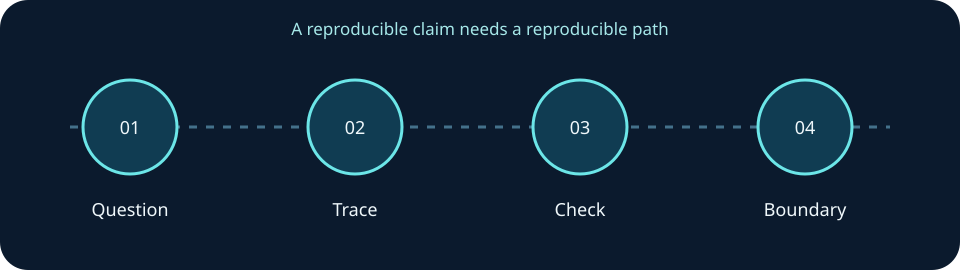

Explainable impact
Reverse dependency traversal identifies potentially affected services and records deterministic shortest paths that explain why each result appears.
ENGINEERING PROJECT / PROJECT DETAILS
ENGINEERING ARTIFACT / PYTHON
The Infrastructure Dependency Analyzer traces a declared service inventory to show potential downstream business impact, dependency paths, circular prerequisites, recovery-target alignment questions, and validation order.
Reverse dependency traversal identifies potentially affected services and records deterministic shortest paths that explain why each result appears.
Detects cycles, highlights RTO alignment questions, and separates declared recovery objectives from demonstrated recovery capability.
25 automated tests cover graph directionality, cycles, duplicate paths, malformed inventories, safe report generation, and CLI behavior. GitHub Actions runs Python 3.10 through 3.13.
Source code, fictional inventories, an interactive offline report, automated tests, and the CI workflow are available on GitHub.
CASE STUDY / CHANGE IMPACT
A flat list of servers cannot tell a change reviewer which downstream workflows depend on a failed service. The linked analyzer traverses a declared dependency inventory; the path shown with each result lets a reviewer inspect the chain and challenge missing or stale edges.

Open the standalone repository and its README ↗︎. Run its tests and fictional example with the documented commands; inspect the example inventory and offline report. Record the selected source revision and compare an expected path with the output. The portfolio itself does not bundle that standalone source or execute its CLI.
The current demonstration uses declared fictional relationships. It shows what follows from those declarations, not what exists in a customer's environment. A useful next validation is to select one service, confirm its dependencies from observed configuration with an owner, then rerun the report and document any changed paths. No live service discovery or production change is claimed here.
LET’S BUILD SOMETHING THAT MATTERS
Infrastructure, engineering, technical leadership, and the next challenging problem.